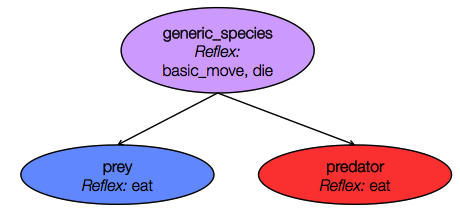

PredatorPrey_step5
5. Predator Agent
This fifth step Illustrates how to use parent species. Indeed,prey and predators share a few common features thus we will define a generic species that will regroup all the common elements (variables, behaviors and aspects) between the prey and the predator species.
Formulation
- Definition of a new generic species: generic_species
- Definition of a new species: predator
- predator agents move randomly
- At each simulation step, a predator agent can eat a prey that is localized at its grid cell
Model Definition
parameters
We add four new parameters related to predator agents:
- The init number of predator agents
- The max energy of the predator agents
- The energy gained by a predator agent while eating a prey agent
- The energy consumed by a predator agent at each time step
We define four new global variables in the global section:
global {
...
int nb_predators_init <- 20;
float predator_max_energy <- 1.0;
float predator_energy_transfer <- 0.5;
float predator_energy_consum <- 0.02;
}
We define then the four corresponding parameters in the experiment:
parameter "Initial number of predators: " var: nb_predators_init min: 0 max: 200 category: "Predator" ;
parameter "Predator max energy: " var: predator_max_energy category: "Predator" ;
parameter "Predator energy transfer: " var: predator_energy_transfer category: "Predator" ;
parameter "Predator energy consumption: " var: predator_energy_consum category: "Predator" ;
parent species
A species can have a parent species: it automatically get all the variables, skill and actions/reflex of the parent species
We define a species called generic_species that is the parent of the species prey and predator:

This species integrates all of the common feature between the prey and predotor species:
the variables:
- size
- color
- max_energy
- max_transfer
- energy_consum
- myCell
- energy
the behaviors:
- basic_move reflex
- die reflex
the aspect:
- base aspect
species generic_species {
float size <- 1.0;
rgb color ;
float max_energy;
float max_transfer;
float energy_consum;
vegetation_cell myCell <- one_of (vegetation_cell) ;
float energy <- (rnd(1000) / 1000) * max_energy update: energy - energy_consum max: max_energy ;
init {
location <- myCell.location;
}
reflex basic_move {
myCell <- one_of (myCell.neighbors) ;
location <- myCell.location ;
}
reflex die when: energy <= 0 {
do die ;
}
aspect base {
draw circle(size) color: color ;
}
}
prey species
We specialize the prey species from the generic_species species:
- definition of the initial value of the agent variables
- definition of the eat reflex
species prey parent: generic_species {
rgb color <- #blue;
float max_energy <- prey_max_energy ;
float max_transfer <- prey_max_transfer ;
float energy_consum <- prey_energy_consum ;
reflex eat when: myCell.food > 0 {
float energy_transfer <- min([max_transfer, myCell.food]) ;
myCell.food <- myCell.food - energy_transfer ;
energy <- energy + energy_transfer ;
}
}
predator species
As done for the prey species, we specialize the predator species from the generic_species species:
- definition of the initial value of the agent variables
- definition of a new variable reachable_preys consisting in the list of prey agents contains in myCell; compute at each simulation step (when the agent is activated).
- definition of the eat reflex: activated when reachable_preys is not empty; choose one of the element of this list, ask it to die; and update the predator energy.
species predator parent: generic_species {
rgb color <- #red ;
float max_energy <- predator_max_energy ;
float energy_transfer <- predator_energy_transfer ;
float energy_consum <- predator_energy_consum ;
list<prey> reachable_preys update: prey inside (myCell);
reflex eat when: ! empty(reachable_preys) {
ask one_of (reachable_preys) {
do die ;
}
energy <- energy + energy_transfer ;
}
}
Note that we used the ask statement. This statement allows to make a remote agent executes a list of statements. Use of the ask statement as follows:
ask one_agent or ask agents_list
We used as well the species/agent list inside geometry/agent operator. This operator returns all the agents of the specified species (or from the specified agent list) that are inside the given geometry or agent geometry.
global init block
Like in the previous model, in the init block of the model, we create nb_predators_init.
global {
...
init {
create prey number: nb_preys_init ;
create predator number: nb_predators_init ;
}
}
monitor
Like in the previous model, we define a monitor to display the number of predator agents.
Definition of a global variable nb_predator that returns the current number of predator agents:
global {
...
int nb_predators -> {length (predator)};
...
}
Definition of the corresponding monitor:
monitor "number of predators" value: nb_predators ;
display
Also, do not forget to add the line to display predators in your simulation
display main_display {
...
species predator aspect: icon ;
}
Complete Model
model prey_predator
global {
int nb_preys_init <- 200;
int nb_predators_init <- 20;
float prey_max_energy <- 1.0;
float prey_max_transfer <- 0.1 ;
float prey_energy_consum <- 0.05;
float predator_max_energy <- 1.0;
float predator_energy_transfer <- 0.5;
float predator_energy_consum <- 0.02;
int nb_preys -> {length (prey)};
int nb_predators -> {length (predator)};
init {
create prey number: nb_preys_init ;
create predator number: nb_predators_init ;
}
}
species generic_species {
float size <- 1.0;
rgb color ;
float max_energy;
float max_transfer;
float energy_consum;
vegetation_cell myCell <- one_of (vegetation_cell) ;
float energy <- (rnd(1000) / 1000) * max_energy update: energy - energy_consum max: max_energy ;
init {
location <- myCell.location;
}
reflex basic_move {
myCell <- one_of (myCell.neighbors) ;
location <- myCell.location ;
}
reflex die when: energy <= 0 {
do die ;
}
aspect base {
draw circle(size) color: color ;
}
}
species prey parent: generic_species {
rgb color <- #blue;
float max_energy <- prey_max_energy ;
float max_transfer <- prey_max_transfer ;
float energy_consum <- prey_energy_consum ;
reflex eat when: myCell.food > 0 {
float energy_transfer <- min([max_transfer, myCell.food]) ;
myCell.food <- myCell.food - energy_transfer ;
energy <- energy + energy_transfer ;
}
}
species predator parent: generic_species {
rgb color <- #red ;
float max_energy <- predator_max_energy ;
float energy_transfer <- predator_energy_transfer ;
float energy_consum <- predator_energy_consum ;
list<prey> reachable_preys update: prey inside (myCell);
reflex eat when: ! empty(reachable_preys) {
ask one_of (reachable_preys) {
do die ;
}
energy <- energy + energy_transfer ;
}
}
grid vegetation_cell width: 50 height: 50 neighbors: 4 {
float maxFood <- 1.0 ;
float foodProd <- (rnd(1000) / 1000) * 0.01 ;
float food <- (rnd(1000) / 1000) max: maxFood update: food + foodProd ;
rgb color <- rgb(int(255 * (1 - food)), 255, int(255 * (1 - food))) update: rgb(int(255 * (1 - food)), 255, int(255 *(1 - food)));
list<vegetation_cell> neighbors <- (self neighbors_at 2);
}
experiment prey_predator type: gui {
parameter "Initial number of preys: " var: nb_preys_init min: 0 max: 1000 category: "Prey" ;
parameter "Prey max energy: " var: prey_max_energy category: "Prey" ;
parameter "Prey max transfer: " var: prey_max_transfer category: "Prey" ;
parameter "Prey energy consumption: " var: prey_energy_consum category: "Prey" ;
parameter "Initial number of predators: " var: nb_predators_init min: 0 max: 200 category: "Predator" ;
parameter "Predator max energy: " var: predator_max_energy category: "Predator" ;
parameter "Predator energy transfer: " var: predator_energy_transfer category: "Predator" ;
parameter "Predator energy consumption: " var: predator_energy_consum category: "Predator" ;
output {
display main_display {
grid vegetation_cell lines: #black ;
species prey aspect: base ;
species predator aspect: base ;
}
monitor "Number of preys" value: nb_preys;
monitor "Number of predators" value: nb_predators;
}
}